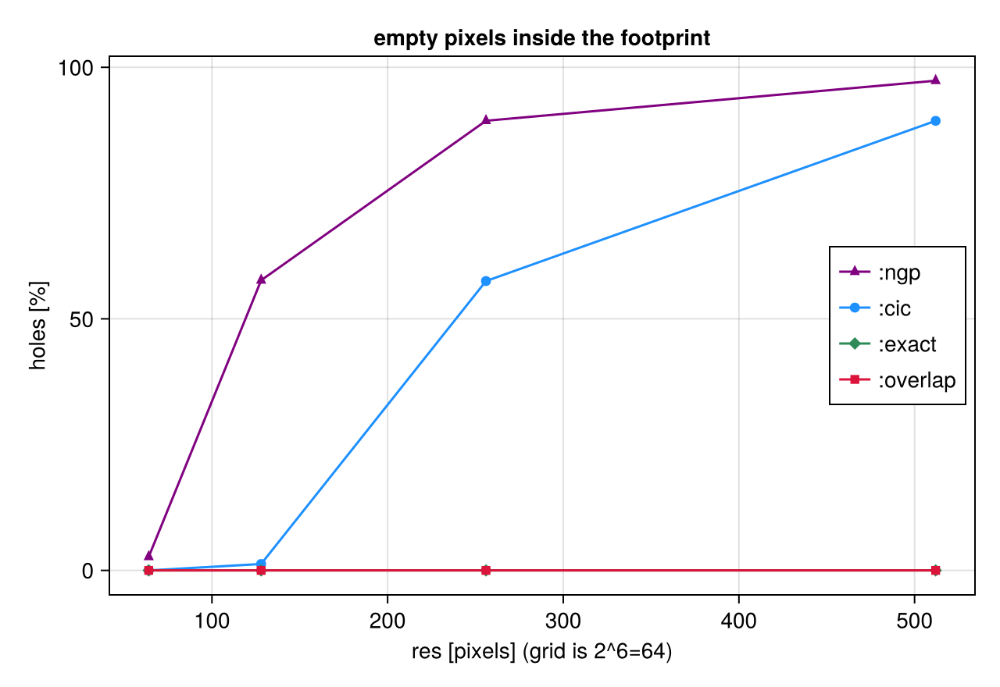
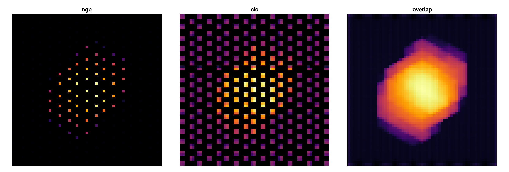
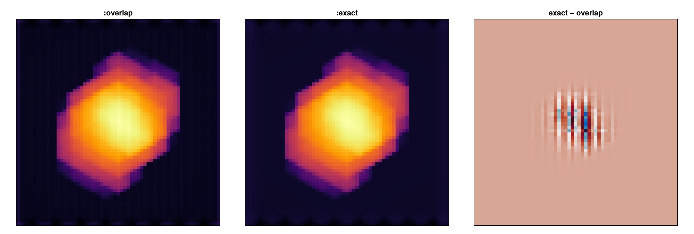

Off-axis projection: validation & error analysis
This tutorial is also an executable Jupyter notebook — open / download 13_multi_OffAxis_Validation.ipynb. The notebooks run end-to-end and double as part of Mera's test suite.
Two questions every projection must answer: does it conserve (nothing lost), and is it accurate (mass in the right place)? This notebook reproduces both, plus the parallel speed-up. Follows the Conservation proof and binning fidelity docs.
using Pkg
Pkg.activate(expanduser("~/Documents/codes/github/Mera.jl")) # adjust to your Mera.jl
using Mera, CairoMakie
CairoMakie.activate!()
println("threads = ", Threads.nthreads()) Activating
threads = 4
project at `~/Documents/codes/github/Mera.jl`BASE = "/Volumes/FASTStorage/Simulations/Mera-Tests" # <-- change me
info = getinfo(100, joinpath(BASE, "spiral_clumps"), verbose=false)
gas = gethydro(info, verbose=false, show_progress=false)
part = getparticles(getinfo(1, joinpath(BASE,"spiral_ugrid"), verbose=false), verbose=false, show_progress=false) 0.746716 seconds (3.91 M allocations: 303.307 MiB, 1.41% gc time, 99.59% compilation time)
PartDataType(Table with 45470 rows, 12 columns:
Columns:
# colname type
────────────────────
1 x Float64
2 y Float64
3 z Float64
4 id Int32
5 family Int8
6 tag Int8
7 vx Float64
8 vy Float64
9 vz Float64
10 mass Float64
11 birth Float64
12 metals Float64, InfoType(1, "/Volumes/FASTStorage/Simulations/Mera-Tests/spiral_ugrid", FileNamesType("/Volumes/FASTStorage/Simulations/Mera-Tests/spiral_ugrid/output_00001", "/Volumes/FASTStorage/Simulations/Mera-Tests/spiral_ugrid/output_00001/info_00001.txt", "/Volumes/FASTStorage/Simulations/Mera-Tests/spiral_ugrid/output_00001/amr_00001.", "/Volumes/FASTStorage/Simulations/Mera-Tests/spiral_ugrid/output_00001/hydro_00001.", "/Volumes/FASTStorage/Simulations/Mera-Tests/spiral_ugrid/output_00001/hydro_file_descriptor.txt", "/Volumes/FASTStorage/Simulations/Mera-Tests/spiral_ugrid/output_00001/grav_00001.", "/Volumes/FASTStorage/Simulations/Mera-Tests/spiral_ugrid/output_00001/part_00001.", "/Volumes/FASTStorage/Simulations/Mera-Tests/spiral_ugrid/output_00001/part_file_descriptor.txt", "/Volumes/FASTStorage/Simulations/Mera-Tests/spiral_ugrid/output_00001/rt_00001.", "/Volumes/FASTStorage/Simulations/Mera-Tests/spiral_ugrid/output_00001/rt_file_descriptor.txt", "/Volumes/FASTStorage/Simulations/Mera-Tests/spiral_ugrid/output_00001/info_rt_00001.txt", "/Volumes/FASTStorage/Simulations/Mera-Tests/spiral_ugrid/output_00001/clump_00001.", "/Volumes/FASTStorage/Simulations/Mera-Tests/spiral_ugrid/output_00001/timer_00001.txt", "/Volumes/FASTStorage/Simulations/Mera-Tests/spiral_ugrid/output_00001/header_00001.txt", "/Volumes/FASTStorage/Simulations/Mera-Tests/spiral_ugrid/output_00001/namelist.txt", "/Volumes/FASTStorage/Simulations/Mera-Tests/spiral_ugrid/output_00001/compilation.txt", "/Volumes/FASTStorage/Simulations/Mera-Tests/spiral_ugrid/output_00001/makefile.txt", "/Volumes/FASTStorage/Simulations/Mera-Tests/spiral_ugrid/output_00001/patches.txt"), "RAMSES", Dates.DateTime("2023-05-11T10:35:31"), Dates.DateTime("2025-06-21T18:30:16.912"), 4, 3, 6, 6, 100.0, 0.0, 1.0, 1.0, 1.0, 0.0, 0.0, 0.045, 3.085677581282e21, 6.77025430198932e-23, 1.9890999999999996e42, 6.559266058737735e6, 4.70430312423675e14, 1.6667, true, 6, 8, 0, [:rho, :vx, :vy, :vz, :p, :metallicity], [:epot, :ax, :ay, :az], [:vx, :vy, :vz, :mass, :family, :tag, :birth, :metals], Symbol[], Symbol[], Symbol[], DescriptorType(1, [:density, :velocity_x, :velocity_y, :velocity_z, :pressure, :metallicity], ["d", "d", "d", "d", "d", "d"], false, true, 1, [:position_x, :position_y, :position_z, :velocity_x, :velocity_y, :velocity_z, :mass, :identity, :levelp, :family, :tag, :birth_time, :metallicity], ["d", "d", "d", "d", "d", "d", "d", "i", "i", "b", "b", "d", "d"], false, true, [:epot, :ax, :ay, :az], false, false, 0, Dict{Any, Any}(), Dict{Any, Any}(), false, false, Symbol[], false, false, Symbol[], false, false), true, true, true, false, false, false, true, Dict{Any, Any}("&COOLING_PARAMS" => Dict{Any, Any}("cooling" => ".true. ", "metal" => ".true. ", "z_ave" => "1."), "&SF_PARAMS" => Dict{Any, Any}("m_star " => " 1. ! in units mass_sph", "n_star " => " 1 ", "T2_star" => " 1e4 ", "eps_star " => " 0.02 !2%"), "&AMR_PARAMS" => Dict{Any, Any}("levelmax" => "6 !7", "npartmax" => " 500000", "ngridmax" => " 100000 ", "boxlen" => "100. !kpc\t", "levelmin" => "6 !3 ", "nexpand" => "1 "), "&BOUNDARY_PARAMS" => Dict{Any, Any}("jbound_min" => " 0, 0,-1,+1,-1,-1", "kbound_max" => " 0, 0, 0, 0,-1,+1", "no_inflow" => ".true.", "bound_type" => " 2, 2, 2, 2, 2, 2 !2", "nboundary " => " 6", "ibound_max" => "-1,+1,+1,+1,+1,+1", "ibound_min" => "-1,+1,-1,-1,-1,-1", "jbound_max" => " 0, 0,-1,+1,+1,+1", "kbound_min" => " 0, 0, 0, 0,-1,+1"), "&OUTPUT_PARAMS" => Dict{Any, Any}("tend" => "10 !Final time of the simulation", "delta_tout" => "0.1 !Time increment between outputs"), "&POISSON_PARAMS" => Dict{Any, Any}("gravity_type" => "-3 "), "&UNITS_PARAMS" => Dict{Any, Any}("units_density " => " 0.677025430198932E-22 ! 1e9 Msol/kpc^3", "units_time " => " 0.470430312423675E+15 ! G", "units_length " => " 0.308567758128200E+22 ! kpc"), "&RUN_PARAMS" => Dict{Any, Any}("pic" => ".true.", "nsubcycle" => "20*2 ", "clumpfind" => "true", "ncontrol" => "1 !frequency of screen output", "poisson" => ".true.", "verbose" => ".false.", "nremap" => "5 !10", "nrestart" => "0", "hydro" => ".true."), "&CLUMPFIND_PARAMS" => Dict{Any, Any}("ivar_clump" => "1", "density_threshold" => "3"), "&FEEDBACK_PARAMS" => Dict{Any, Any}("t_sne" => "10. !10. !Myr", "eta_sn " => "0.2", "!delayed_cooling" => ".true.", "!t_diss " => " 1.\t!Myr", "f_ek" => "0.")…), true, true, Mera.FilesContentType(["#############################################################################", "# If you have problems with this makefile, contact Romain.Teyssier@gmail.com", "#############################################################################", "# Compilation time parameters", "NVECTOR = 64 #32", "NDIM = 3", "NPRE = 8", "NVAR = 6", "NENER = 0", "SOLVER = hydro" … "\t\$(F90) \$(FFLAGS) -c write_patch.f90 -o \$@", "%.o:%.F", "\t\$(F90) \$(FFLAGS) -c \$^ -o \$@ \$(LIBS_OBJ)", "%.o:%.f90", "\t\$(F90) \$(FFLAGS) -c \$^ -o \$@ \$(LIBS_OBJ)", "FORCE:", "#############################################################################", "clean:", "\trm -f *.o *.\$(MOD) *.i", "#############################################################################"], [" --------------------------------------------------------------------", "", " minimum average maximum standard dev std/av % rmn rmx TIMER", " 0.000 0.000 0.000 0.000 0.421 0.3 1 4 coarse levels ", " 0.001 0.001 0.001 0.000 0.017 99.7 1 4 particles ", " 0.001 100.0 TOTAL"], ["/data2/mabe/MeraTest/Ramses/patch_2019_10version/add_list.f90", "!################################################################", "!################################################################", "!################################################################", "!################################################################", "subroutine add_list(ind_part,list2,ok,np)", " use amr_commons", " use pm_commons", " implicit none", " integer::np" … " end do", "", " end do", " ! End loop over grid cells", "end subroutine tsc_cell", "#endif", "!###########################################################", "!###########################################################", "!###########################################################", "!###########################################################"]), true, true, true, 0, ScalesType002(0.0010000000000006482, 1.0000000000006481, 1000.0000000006482, 1.0000000000006482e6, 3261.5637769461323, 2.0626480623310105e23, 3.0856775812820004e16, 3.085677581282e19, 3.085677581282e21, 3.085677581282e22, 3.085677581282e25, 1.0000000000019446e-9, 1.0000000000019444, 1.0000000000019448e9, 1.0000000000019446e18, 3.469585750743794e10, 8.775571306099254e69, 2.9379989454983075e49, 2.9379989454983063e58, 2.9379989454983065e64, 2.937998945498306e67, 2.937998945498306e76, 0.9999999999980551, 0.9999999999980551, 6.77025430198932e-23, 999.9999999987034, 999.9999999987034, 0.20890821919226463, 0.014907037050462488, 14.907037050462488, 1.4907037050462488e7, 4.70430312423675e14, 4.70430312423675e17, 9.999999999999998e8, 9.999999999999998e8, 3.330598439436053e14, 1.0479261167570186e12, 1.9890999999999996e42, 65.59266058737735, 65592.66058737735, 6.559266058737735e6, 30.996344997059538, 8.557898117221824e55, 2.9128322630389308e-9, 517291.4494607442, 517291.4494607442, 680646.644027295, 680646.644027295, 2.9128322630389304e-9, 2.9128322630389304e-9, 2.109755819936081e7, 2.109755819936081e7, 3.1162135509683387e29, 1.2537844818309073e65, 6.198460374231122e71, 6.198460374231122e64, 2.109755819936081e7, 2.1097558199360812e8, 1.380649e-16, 4.0258946849746426e70, 4.0258946849746426e70, 4.0258946849746425e71, 0.00019132101231911184, 191.32101231911184, 191.32101231911184, 1.9132101231911187e-8, 5.341419875695069e67, 5.341419875695069e64, 5.341419875695069e61, 1.819163836006061e41, 4.752256624885217e7, 4.752256624885217e7, 3.4036771916893676e-65, 1.158501842524895e-120, 30.996344997059538, 0.09145663043618026, 6.1918464565599674e-24, 6.1918464565599674e-24, 0.6191846456559967, 619.1846456559967, 619184.6456559967, 1.2584832481461724e23, 1.2584832481461724e23, 1.3943119491905496e-8, 1.3943119491905495e-10, 1.3943119491905496e-13, 3.0984365782372897e-9, 4.302397122930886e13, 4.302397122930886e6, 4302.397122930886, 2.9128322630389304e-9, 8.557898117221824e55, 9.439846472322433e-31, 4.5186572882681335e-30, 3.085677581282e21, 1.9890999999999996e42, 4.70430312423675e14, 1.0, 5.0e-324, 0.0, 0.0, 5.0e-324, 0.0, 0.0, 5.0e-324, 5.0e-324, 5.0e-324, 0.0, 0.0, 0.0, 0.0, 4.302397122930886e13, 5.0e-324, 3.085677581282e21, 1.9890999999999996e42, 1.9890999999999996e42, 4.70430312423675e14, 8.557898117221824e55, 8.557898117221824e55, 1.0, 0.0, 0.0, 1.3943119491905496e-8, 1.3943119491905496e-8, 1.3943119491905496e-8, 1.3943119491905496e-8, 1.3943119491905496e-8, 3.085677581282e21, 3.085677581282e21, 1.0, 1.0, 1.0, 57.29577951308232), GridInfoType(100000, 0, 3, 3, 3, 6, 6, 13349, [0.0, 520176.0, 1.04888e6, 1.570528e6, 2.097152e6], Bool[0, 0, 0, 0]), PartInfoType(0.0, 0.6708241192497574, 0.0, 0, 39970, 5500, 0, 0, 0, 0, 0, 0, 0, 0, 0, 0, 0), CompilationInfoType("", "", "", "", ""), PhysicalUnitsType002(0.01495978707, 3.08567758128e24, 3.08567758128e21, 3.08567758128e18, 3.08567758128e15, 9.4607304725808e17, 1.9891e33, 1.9891e33, 5.9722e27, 1.89813e30, 6.96e10, 6.96e10, 9.1093837015e-28, 1.67262192369e-24, 1.67492749804e-24, 1.66e-24, 1.6605390666e-24, 6.02214076e23, 2.99792458e10, 6.6743e-8, 1.380649e-16, 1.380649e-16, 6.62607015e-27, 1.0545718176461565e-27, 5.670374419e-5, 6.6524587321e-25, 0.0072973525693, 8.314462618e7, 1.602176634e-12, 1.602176634e-9, 1.602176634e-6, 0.001602176634, 3.828e33, 3.828e33, 1.6605390666e-24, 86400.0, 3600.0, 60.0, 3.15576e16, 3.15576e13, 3.15576e7)), 6, 6, 100.0, [0.0, 1.0, 0.0, 1.0, 0.0, 1.0], [:x, :y, :z, :id, :family, :tag, :vx, :vy, :vz, :mass, :birth, :metals], Dict{Any, Any}(), ScalesType002(0.0010000000000006482, 1.0000000000006481, 1000.0000000006482, 1.0000000000006482e6, 3261.5637769461323, 2.0626480623310105e23, 3.0856775812820004e16, 3.085677581282e19, 3.085677581282e21, 3.085677581282e22, 3.085677581282e25, 1.0000000000019446e-9, 1.0000000000019444, 1.0000000000019448e9, 1.0000000000019446e18, 3.469585750743794e10, 8.775571306099254e69, 2.9379989454983075e49, 2.9379989454983063e58, 2.9379989454983065e64, 2.937998945498306e67, 2.937998945498306e76, 0.9999999999980551, 0.9999999999980551, 6.77025430198932e-23, 999.9999999987034, 999.9999999987034, 0.20890821919226463, 0.014907037050462488, 14.907037050462488, 1.4907037050462488e7, 4.70430312423675e14, 4.70430312423675e17, 9.999999999999998e8, 9.999999999999998e8, 3.330598439436053e14, 1.0479261167570186e12, 1.9890999999999996e42, 65.59266058737735, 65592.66058737735, 6.559266058737735e6, 30.996344997059538, 8.557898117221824e55, 2.9128322630389308e-9, 517291.4494607442, 517291.4494607442, 680646.644027295, 680646.644027295, 2.9128322630389304e-9, 2.9128322630389304e-9, 2.109755819936081e7, 2.109755819936081e7, 3.1162135509683387e29, 1.2537844818309073e65, 6.198460374231122e71, 6.198460374231122e64, 2.109755819936081e7, 2.1097558199360812e8, 1.380649e-16, 4.0258946849746426e70, 4.0258946849746426e70, 4.0258946849746425e71, 0.00019132101231911184, 191.32101231911184, 191.32101231911184, 1.9132101231911187e-8, 5.341419875695069e67, 5.341419875695069e64, 5.341419875695069e61, 1.819163836006061e41, 4.752256624885217e7, 4.752256624885217e7, 3.4036771916893676e-65, 1.158501842524895e-120, 30.996344997059538, 0.09145663043618026, 6.1918464565599674e-24, 6.1918464565599674e-24, 0.6191846456559967, 619.1846456559967, 619184.6456559967, 1.2584832481461724e23, 1.2584832481461724e23, 1.3943119491905496e-8, 1.3943119491905495e-10, 1.3943119491905496e-13, 3.0984365782372897e-9, 4.302397122930886e13, 4.302397122930886e6, 4302.397122930886, 2.9128322630389304e-9, 8.557898117221824e55, 9.439846472322433e-31, 4.5186572882681335e-30, 3.085677581282e21, 1.9890999999999996e42, 4.70430312423675e14, 1.0, 5.0e-324, 0.0, 0.0, 5.0e-324, 0.0, 0.0, 5.0e-324, 5.0e-324, 5.0e-324, 0.0, 0.0, 0.0, 0.0, 4.302397122930886e13, 5.0e-324, 3.085677581282e21, 1.9890999999999996e42, 1.9890999999999996e42, 4.70430312423675e14, 8.557898117221824e55, 8.557898117221824e55, 1.0, 0.0, 0.0, 1.3943119491905496e-8, 1.3943119491905496e-8, 1.3943119491905496e-8, 1.3943119491905496e-8, 1.3943119491905496e-8, 3.085677581282e21, 3.085677581282e21, 1.0, 1.0, 1.0, 57.29577951308232))1. Conservation — mass is invariant under angle, pixel size and binning
For an extensive quantity the projected total must equal the geometry-independent ground truth sum(getvar(:mass)), to ~machine precision, for every viewing angle and pixel size. This is a partition-of-unity property of the deposit (Hockney & Eastwood 1988).
Mtot = sum(getvar(gas, :mass, :Msol))
relerr(a,b) = abs(a-b)/abs(b)
LOS = [[0,0,1],[1,0,0],[1,1,1],[1,-2,0.5],[-2,1,3]]
RES = [50,100,137,200,256]
worst = 0.0
for los in LOS, res in RES, b in (:cic,:overlap)
p = projection(gas, :mass, :Msol; los=los, res=res, binning=b, verbose=false, show_progress=false)
global worst = max(worst, relerr(sum(p.maps[:mass]), Mtot))
end
println("worst relative error over ", length(LOS), " angles × ", length(RES), " pixel sizes × {cic,overlap} = ", worst)worst relative error over 5
angles × 5 pixel sizes × {cic,overlap} = 1.2637699992324175e-15The same via the physical pixel size pxsize=[size,:unit] (not only res):
for px in (0.3,0.75,1.5), los in LOS
p = projection(gas, :mass, :Msol; los=los, pxsize=[px,:kpc], binning=:overlap, verbose=false, show_progress=false)
@assert relerr(sum(p.maps[:mass]), Mtot) < 1e-9
end
println("conserved for every physical pixel size too ✓")conserved for every physical pixel size too ✓2. Accuracy — conservation is NOT sufficient
All binnings conserve the total, but they place the mass differently. :cic/:ngp deposit the cell centre, so when pixels are smaller than cells they leave holes; :overlap fills the footprint. We use a uniform-grid galaxy so 'pixels per cell' is exact.
(This is the only place we use a second dataset: a uniform-grid companion run spiral_ugrid, because the 'pixels finer than cells' regime needs an exactly known cell size — only a uniform grid provides that. Everything else uses the same spiral_clumps galaxy.)
ug = part === nothing ? nothing : gethydro(getinfo(1, joinpath(BASE,"spiral_ugrid"), verbose=false), verbose=false, show_progress=false)
los = [1.0,1,1]; holes(M,fp)=count(fp .& (M .== 0))/count(fp)
RES = [64,128,256,512]; hc=Float64[]; hn=Float64[]; he=Float64[]
for r in RES
po = projection(ug, :sd, los=los, res=r, binning=:overlap, verbose=false, show_progress=false).maps[:sd]
pc = projection(ug, :sd, los=los, res=r, binning=:cic, verbose=false, show_progress=false).maps[:sd]
pn = projection(ug, :sd, los=los, res=r, binning=:ngp, verbose=false, show_progress=false).maps[:sd]
pe = projection(ug, :sd, los=los, res=r, binning=:exact, verbose=false, show_progress=false).maps[:sd]
fp = po .> 0; push!(hc, 100holes(pc,fp)); push!(hn, 100holes(pn,fp)); push!(he, 100holes(pe,fp))
end
fig = Figure(size=(640,440)); ax = Axis(fig[1,1], title="empty pixels inside the footprint", xlabel="res [pixels] (grid is 2^6=64)", ylabel="holes [%]")
scatterlines!(ax, RES, hn, label=":ngp", color=:purple, marker=:utriangle)
scatterlines!(ax, RES, hc, label=":cic", color=:dodgerblue, marker=:circle)
scatterlines!(ax, RES, he, label=":exact", color=:seagreen, marker=:diamond)
scatterlines!(ax, RES, zeros(length(RES)), label=":overlap", color=:crimson, marker=:rect)
axislegend(ax, position=:rc); fig 0.450457 seconds (1.74 M allocations: 128.779 MiB, 97.66% compilation time)
:overlap stays hole-free; :cic/:ngp degrade as the map out-resolves the data — and all three still sum to the identical total. Side-by-side at high resolution:
fig = Figure(size=(1300,440)); zr=[-8.0,8.0]
for (k,b) in enumerate((:ngp,:cic,:overlap))
p = projection(ug, :sd, :Msol_pc2; los=los, binning=b, center=[:bc], xrange=zr, yrange=zr, range_unit=:kpc, pxsize=[0.3, :kpc])
A = log10.(replace(p.maps[:sd], 0.0=>NaN))
ax = Axis(fig[1,k], aspect=DataAspect(), title=String(b)); hidedecorations!(ax)
heatmap!(ax, A, colormap=:inferno, nan_color=:black)
end
fig[Mera]: 2026-06-06T10:08:39.162
center: [0.5, 0.5, 0.5] ==> [50.0 [kpc] :: 50.0 [kpc] :: 50.0 [kpc]]
domain:
xmin::xmax: 0.42 :: 0.58 ==> 42.0 [kpc] :: 58.0 [kpc]
ymin::ymax: 0.42 :: 0.58 ==> 42.0 [kpc] :: 58.0 [kpc]
zmin::zmax: 0.0 :: 1.0 ==> 0.0 [kpc] :: 100.0 [kpc]
Selected var(s)=(:sd,)
Weighting = :mass
Off-axis LOS =
[0.5774, 0.5774, 0.5774] (binning=:ngp)
Effective resolution: 334^2 → map size: 61 x 62
[Mera]: 2026-06-06T10:08:43.262
center: [0.5, 0.5, 0.5] ==> [50.0 [kpc] :: 50.0 [kpc] :: 50.0 [kpc]]
domain:
xmin::xmax: 0.42 :: 0.58 ==> 42.0 [kpc] :: 58.0 [kpc]
ymin::ymax: 0.42 :: 0.58 ==> 42.0 [kpc] :: 58.0 [kpc]
zmin::zmax: 0.0 :: 1.0 ==> 0.0 [kpc] :: 100.0 [kpc]
Selected var(s)=(:sd,)
Weighting = :mass
Off-axis LOS = [0.5774, 0.5774, 0.5774] (binning=:cic)
Effective resolution: 334^2 → map size: 61 x 62
[Mera]: 2026-06-06T10:08:43.298
center: [0.5, 0.5, 0.5] ==> [50.0 [kpc] :: 50.0 [kpc] :: 50.0 [kpc]]
domain:
xmin::xmax: 0.42 :: 0.58 ==> 42.0 [kpc] :: 58.0 [kpc]
ymin::ymax: 0.42 :: 0.58 ==> 42.0 [kpc] :: 58.0 [kpc]
zmin::zmax: 0.0 :: 1.0 ==> 0.0 [kpc] :: 100.0 [kpc]
Selected var(s)=(:sd,)
Weighting = :mass
Off-axis LOS = [0.5774, 0.5774, 0.5774] (binning=:overlap)
Effective resolution: 334^2 → map size: 61 x 62
2b. :overlap vs :exact — both footprint methods agree
:overlap (the default) approximates the projected cube footprint with ns = ceil(cellsize/pixel) sub-points per axis (capped at nmax, default 64); :exact integrates the line-of-sight column (the chord length through the cube) over each pixel analytically — the exact limit :overlap converges to. Both are hole-free at any resolution and conserve the same total, so their maps agree closely (right panel: their tiny difference). Because :overlap is hole-free **and usually *faster*** than :exact, it is the recommended default; reach for :exact when you need the analytic per-pixel column itself or a fidelity reference. Raise nmax for fewer artifacts on very coarse cells.
re = projection(ug, :sd, :Msol_pc2; los=los, binning=:exact, center=[:bc], xrange=zr, yrange=zr, range_unit=:kpc, pxsize=[0.3, :kpc])
ro = projection(ug, :sd, :Msol_pc2; los=los, binning=:overlap, center=[:bc], xrange=zr, yrange=zr, range_unit=:kpc, pxsize=[0.3, :kpc])
@info "exact vs overlap" total_ratio=sum(re.maps[:sd])/sum(ro.maps[:sd]) L1diff=sum(abs.(re.maps[:sd].-ro.maps[:sd]))/sum(ro.maps[:sd])
fig = Figure(size=(1300,440))
for (k,(lab,M)) in enumerate(((":overlap", ro.maps[:sd]), (":exact", re.maps[:sd]),
("exact − overlap", re.maps[:sd] .- ro.maps[:sd])))
A = k==3 ? M : log10.(replace(M, 0.0=>NaN))
ax = Axis(fig[1,k], aspect=DataAspect(), title=lab); hidedecorations!(ax)
heatmap!(ax, A, colormap=(k==3 ? :balance : :inferno), nan_color=:black)
end
fig[Mera]: 2026-06-06T10:08:43.603
center: [0.5, 0.5, 0.5] ==> [50.0 [kpc] :: 50.0 [kpc] :: 50.0 [kpc]]
domain:
xmin::xmax: 0.42 :: 0.58 ==> 42.0 [kpc] :: 58.0 [kpc]
ymin::ymax: 0.42 :: 0.58 ==> 42.0 [kpc] :: 58.0 [kpc]
zmin::zmax: 0.0 :: 1.0 ==> 0.0 [kpc] :: 100.0 [kpc]
Selected var(s)=(:sd,)
Weighting = :mass
Off-axis LOS = [0.5774, 0.5774, 0.5774] (binning=:exact)
Effective resolution: 334^2 → map size: 61 x 62
[Mera]: 2026-06-06T10:08:43.686
center: [0.5, 0.5, 0.5] ==> [50.0 [kpc] :: 50.0 [kpc] :: 50.0 [kpc]]
domain:
xmin::xmax: 0.42 :: 0.58 ==> 42.0 [kpc] :: 58.0 [kpc]
ymin::ymax: 0.42 :: 0.58 ==> 42.0 [kpc] :: 58.0 [kpc]
zmin::zmax: 0.0 :: 1.0 ==> 0.0 [kpc] :: 100.0 [kpc]
Selected var(s)=(:sd,)
Weighting = :mass
Off-axis LOS = [0.5774, 0.5774, 0.5774] (binning=:overlap)
Effective resolution: 334^2 → map size: 61 x 62
┌ Info: exact vs overlap
│ total_ratio = 0.9999999999999988
└ L1diff = 0.04225247791659
3. Parallel speed-up of the accurate deposit
The :overlap deposit is thread-parallel. Start Julia with several threads (julia -t N); max_threads caps the count for a call. (Speed-up is sub-linear because the per-cell getvar setup is serial — an Amdahl ceiling.)
bench(p) = projection(gas, :sd, :Msol; los=[1,1,1], res=1024, binning=:overlap, max_threads=p, center=[:bc], verbose=false, show_progress=false)
bench(1) # warm up
ps = filter(p->p<=Threads.nthreads(), [1,2,4])
tmin(p;n=3) = minimum(@elapsed(bench(p)) for _ in 1:n)
times = [tmin(p) for p in ps]; speedup = times[1] ./ times
for (p,t,s) in zip(ps,times,speedup); println("max_threads=", p, " ", round(t,digits=3), " s (", round(s,digits=2), "×)"); endmax_threads=1
8.353 s (1.0×)
max_threads=2 7.421 s (1.13×)
max_threads=4 5.668 s (1.47×)4. Kinematics oracle — the velocity axis is recovered correctly
Conservation and footprint accuracy say nothing about the velocity. Here the recovered line-of-sight velocity is checked against the analytic mass-weighted value computed straight from the cells with the same camera ŵ. A basis sign flip or a vx/vy swap would fail this.
pv = projection(gas, :vlos, :km_s, direction=:edgeon, center=[:bc], verbose=false, show_progress=false)
sd = projection(gas, :sd, direction=:edgeon, center=[:bc], verbose=false, show_progress=false)
w = pv.los
vx=getvar(gas,:vx,:km_s); vy=getvar(gas,:vy,:km_s); vz=getvar(gas,:vz,:km_s); mm=getvar(gas,:mass)
vlos_analytic = sum(mm .* (vx.*w[1] .+ vy.*w[2] .+ vz.*w[3])) / sum(mm)
vlos_map_mean = sum(pv.maps[:vlos] .* sd.maps[:sd]) / sum(sd.maps[:sd])
println("analytic ⟨v_los⟩ = ", round(vlos_analytic, digits=4), " km/s")
println("from the map = ", round(vlos_map_mean, digits=4), " km/s")
println("relative error = ", round(abs(vlos_map_mean - vlos_analytic)/abs(vlos_analytic), sigdigits=3))analytic ⟨v_los⟩ = 8.2057
km/s
from the map = 8.2057 km/s
relative error = 1.73e-155. These guarantees are regression-tested
Everything in this notebook is locked by the CI test suite:
test/33— data-free camera kinematics + the:exactbox-spline deposit (exactness vs an analytic square-overlap to ~1e-16 and a chord oracle);test/34— conservation across angles × pixel sizes ×{:cic,:overlap,:exact};test/35— spatial fidelity (holes vs resolution;:exacthole-free; exact↔overlap);test/06off-axis testsets — the kinematics oracle, cubes,getspectrum,column_integral,rotation_sequence, and fullsavecube/loadcuberound-trips.
Takeaway
- Conservation (this notebook §1) is exact to ~10⁻¹⁶ for every angle, pixel size and binning;
- Accuracy (§2) is not the same thing —
:cic/:ngpdeposit cell centres and leave holes/moiré when pixels are finer than cells, while the default:overlapfills the footprint (hole-free at any resolution); binning=:exact(§2b) is the analytic footprint that:overlapconverges to; since:overlapis hole-free and usually faster, use it as the default and reach for:exactwhen you need the analytic per-pixel column or a fidelity reference (nmaxtunes the:overlapquality/speed cap);- the accurate deposit scales with threads (§3).